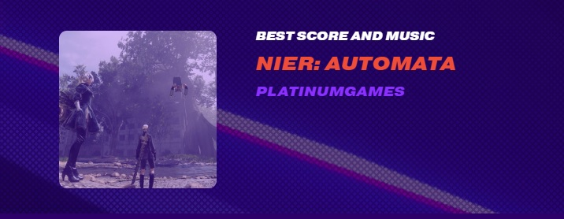
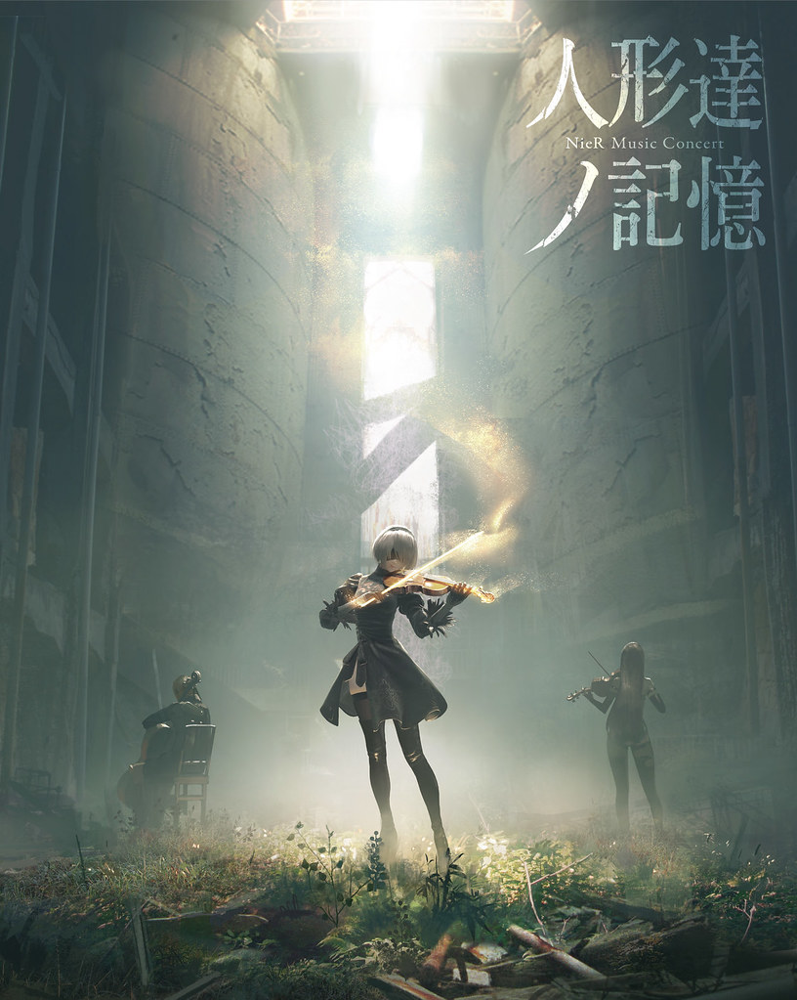

Nier:Autómata tiene una Banda Sonora Original única, creada por Keiichi Okabe. Su idioma es el Lenguaje caótico, que creó Emi Evans, se inspiró en varios idiomas como el Inglés y el Alemán, también
declaró que lo creó pensando que en miles de años podría evolucionar así el lenguaje. Aunque el lenguaje caótico no tiene ninguna traducción directa, ha sido gratamente aceptado por la comunidad, ya que
da la sensación de que se ajusta perfectamente a la instrumental y a los momentos del juego.
En 2017 fue premiado por su majestuosa banda sonora, que parecía acertar en cada momento del juego, y le dio la oportunidad de crear su edición juego del año.
( Aquí puedes ver todos los premios oficiales del año 2017.)

Con el éxito de esta banda sonora, han dado conciertos con solo las canciones del juego Nier:Autómata, los cuales tuvieron muchísimo éxito.

Aquí dejo una lista de reproduccion con las mejores canciones de Nier:Autómata. Están en Lenguaje Caótico, aunque las más significativas también tienen su "traducción" en Japonés e Inglés.